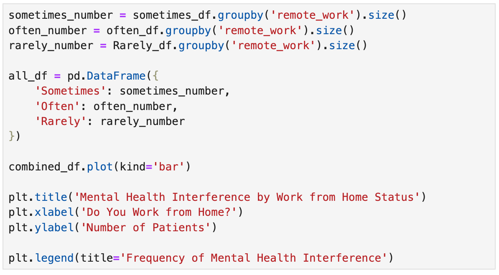
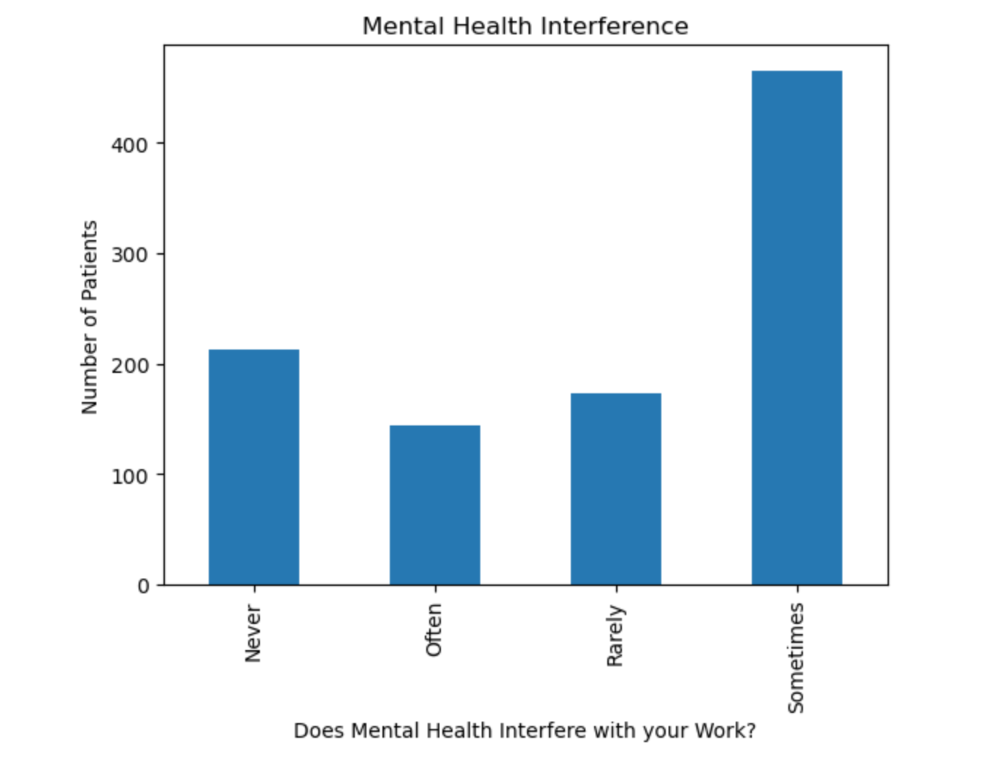
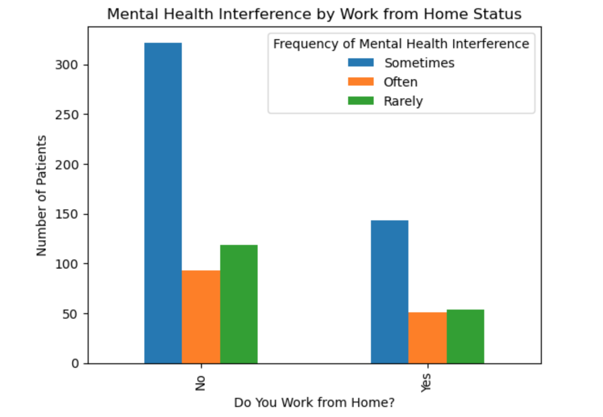
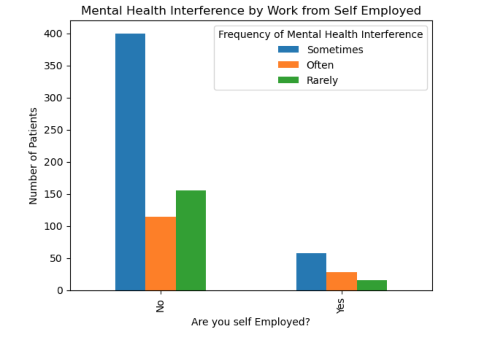
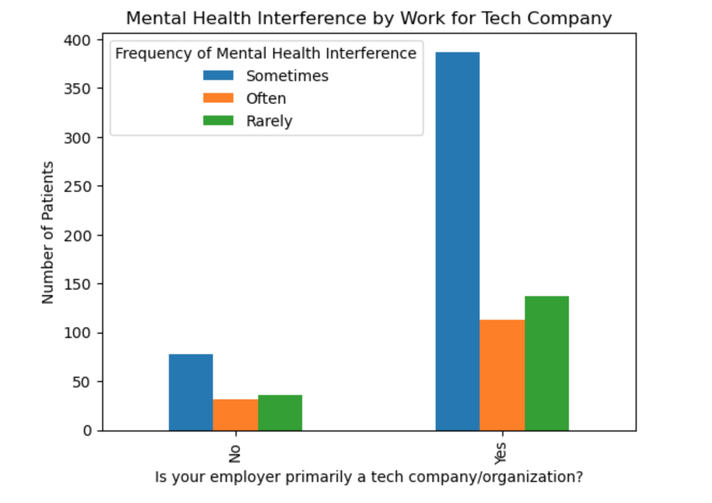

Project 1 : Mental Health in the Technology Field
Introduce the Problem:
With this dataset, I would like to seek out answers on how to have a healthy lifestyle while pursuing a tech job. I would like to inform others and myself on what is an ideal tech job for one's mental health and how to have a healthy work-life balance.
Introduce the data
The dataset that I used to solve this problem is the Mental Health in Tech Survey conducted by the Open Sourcing Mental Illness non profit organization. I found the dataset on the Kaggle webstite: Mental Health in Tech. The dataset consists of responses from a survey in 2014 where participants answered questions about mental health in a tech workspace.
Pre processing
First I found all of the Null values for the work-interference column because I am only working with those who have mental health work inteference so all other data is obsolet.

Then I created a dataframe with only those values

Then I processed to create a dataframe with each outcome of the work-interference-graph so I will be able to get a better understand of what is contributing to each persons poor mental health when working:


Using the data created from the pre-processing data I was able to create graphs grouping the data together and changing the group by filter to understand different factors on how to better help employees with mental health.
Results
The graph above is from the dataset Mental Health in Tech Survey. Participants were asked the question "if you have a mental health condition, do you feel that if interferes with your work?" The results shows results of Often, Rarley, Never, or Sometimes. With this data we can infer that mental health conditions do interfere with ones work and is important to consider how to pervent negative mental health conditions at work and what conditions would make us effective workers.
The graph shown above from the data set shows that the group that often, Rarely, and sometimes feels mental health interferes with their work and their answers to wether they work at home or not at least 50% of the time. The data shows that most people who have mental health problems that interfere with their work are often people who go into the office and do not work from home.
Another question was asked to the patients "are you self-employed?". Out of the paitents who say mental health interfere with their work most of them are not self employed. From the data it would seem that it would wise to consider self employment when pursing a tech career for the mental health benifits. The data could also reflect that more people in tech just do not start their own companies.
For the final graph above, the question is "Is your employer primarily a tech company/organization?" Most of the patients affected by mental health are employed by tech companies. So, when considering your options for future jobs, consider working for a non-tech company. Employees in primarily dominant tech companies are often under more stress to stay at the top of their field and craft.
Storytelling and Impact
From the data we can come to the conclusion of a few solutions to the problem we set out to solve. To have a healthy lifestyle while pursing a tech job it is wise to first consider jobs where you are able to work from home. Second consider possibly working on your own tech company or tech related company. The data showed that majority of the patients that have mental health inteference are not self employed. These results could also be due to more people being employed through companies. The final aspect to consider is to work for compaines that are not primarily a tech company or organization. This is due to the data showing that more mental health problems are influenced by working in these fields.
The possible impacts of my projects could be a shift in where employees choose to work and to consider their mental health more seriously. It could also be that these tips do not help their mental health completely due to outside factors that can not be detected from the data. Also the catorgies I used for the data could not correlate how I interpeted it to. For example the "Mental Health Inteference by Work from Self Employed" graph could show these results because just more people work for companies instead of being self-employed and self-employed people could just have as much mental health interference.
References
- Class Material
- Stack Overflow
- ChatGPT: Used for some grammer correct and debugging of code and to understand how to group graphs and columns together for more consise graphs.